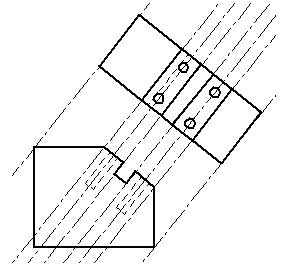

Projection lines
Projection lines are extensions of lines that assist in 2D drawing.
-
You can use projection lines to help you create new geometry, and any constraints you create with them remain active even after you turn projection lines off. For example, in a drawing, you can use projection lines on an auxiliary view to enable creation of additional views with proper alignment and size.

-
You can create a line with the projection line option set, or you can edit an existing line and set the projection line property later.
-
You can place dimensions and annotations to projection lines. Dimensions and annotations connect to the defining segment of the projection line (the original 2D line on which the projection line is based).
Projection lines are available as a line property on the Line command bar and on the Format page of the Element Properties dialog box.